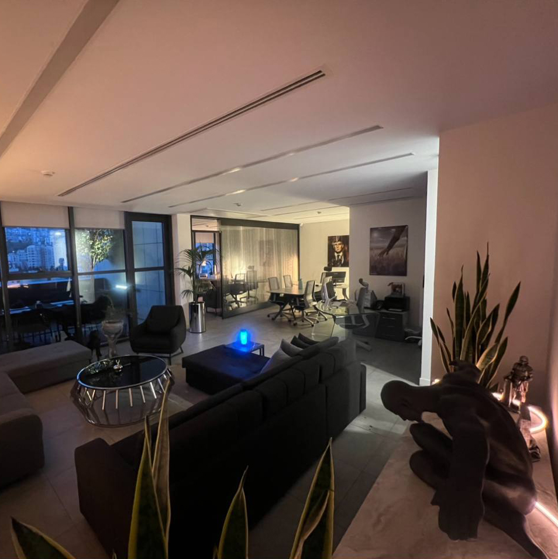

درباره ما
گروه زرین گستران هفت آسمان
گروه زرین گستران هفت آسمان یک شرکت پیشرو در زمینه واردات و صادرات و فعالیتهای تجاری است. این شرکت با تخصص و تجربه خود، انواع خشکبار، میوه و صیفیجات را به کشورهای حوزه خلیج فارس صادر میکند. همچنین، انواع کشمش به کشورهای دیگر صادر میشود. زرین گستران در صادرات مواد غذایی و مواد شوینده و بهداشتی به سایر قارهها نیز فعال است. در زمینه واردات، این شرکت کائوچو و انواع تایر خودروهای سبک و سنگین را از چندین کشور آسیایی وارد میکند و انواع تجهیزات و ماشینآلات صنعتی را از یک کشور اروپایی به کشور میآورد. علاوه بر این، واردات انواع دانه قهوه از قارههای دیگر نیز از فعالیتهای مهم این شرکت میباشد. هدف گروه زرین گستران هفت آسمان ارائه خدمات با کیفیت و گسترش روابط تجاری در سطح بینالمللی است.

هدف ما
گروه زرین گستران هفت آسمان یک شرکت بازرگانی است که در زمینه واردات و صادرات فعالیت میکند. این شرکت با بهرهگیری از تخصص و تجربهی خود، ارتباطات مؤثری با شرکای تجاری در سراسر جهان دارد. هدف ما ارائهی خدماتی است که نیازهای مشتریان را برآورده کرده و رضایت آنها را جلب کند. ما با تمرکز بر کیفیت و امانتداری، سعی داریم بهترین محصولات و خدمات را به مشتریان خود ارائه دهیم.
ما به دنبال ایجاد روابط پایدار و مطمئن با مشتریان و همکاران تجاری خود هستیم تا با هم به سوی آیندهای روشنتر گام برداریم. تلاش ما بر این است که با استفاده از بهترین روشهای تجاری و بهرهمندی از تکنولوژیهای روز، در مسیر رشد و توسعه قدم برداریم و سهمی مؤثر در ارتقای سطح تجارت بینالمللی ایفا کنیم. علاوه بر این، ما به بهبود مداوم فرآیندهای کاری و افزایش بهرهوری اعتقاد داریم. این امر از طریق آموزش مداوم کارکنان و ارتقای مهارتهای فنی و حرفهای آنها محقق میشود.
در نهایت، هدف ما ایجاد یک محیط کاری مثبت و پرانرژی است که در آن تمامی اعضای تیم بتوانند به بهترین شکل ممکن همکاری کنند و به موفقیتهای بیشتری دست یابند. گروه زرین گستران هفت آسمان به تعهدات خود پایبند است و تلاش میکند تا با ارائه خدمات متمایز، اعتماد و وفاداری مشتریان خود را جلب کند.